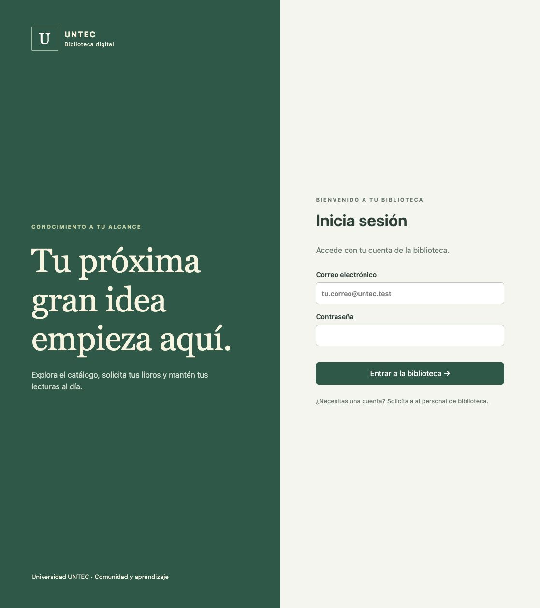
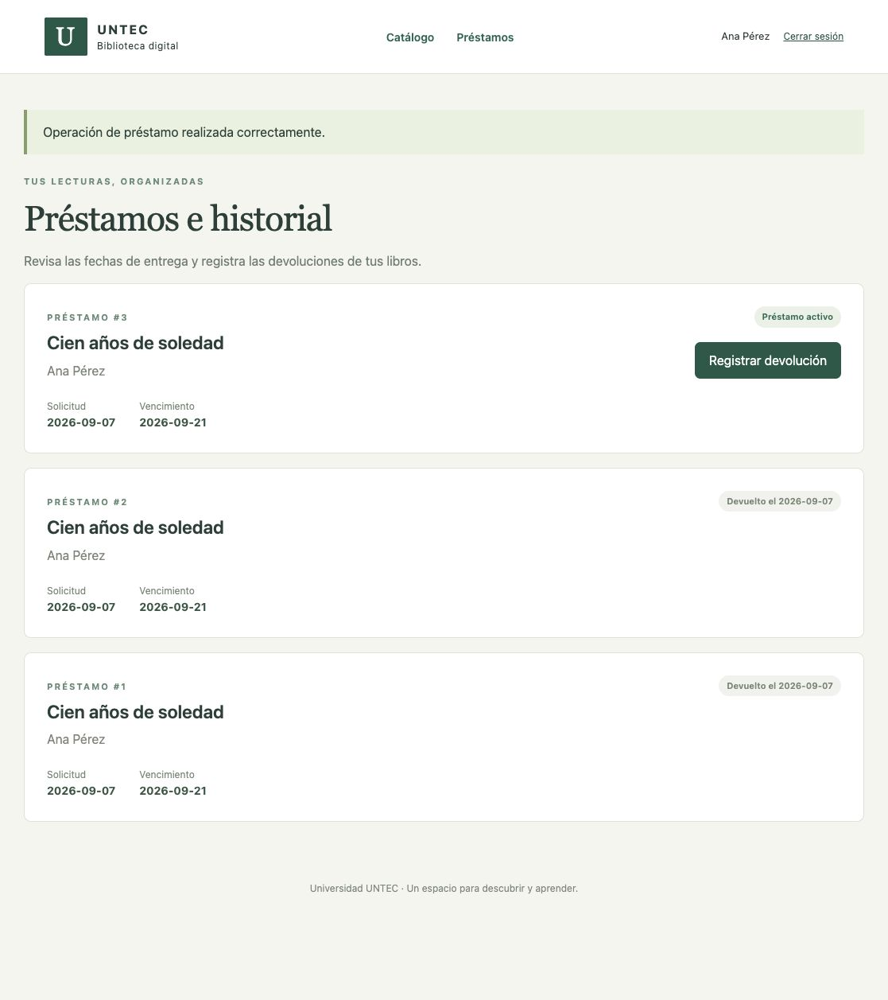
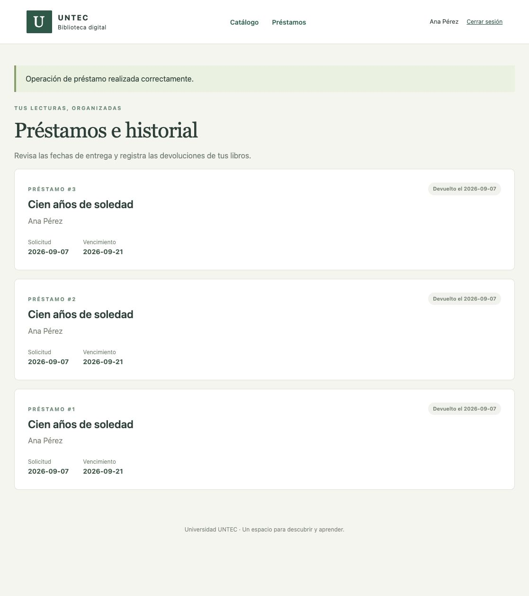
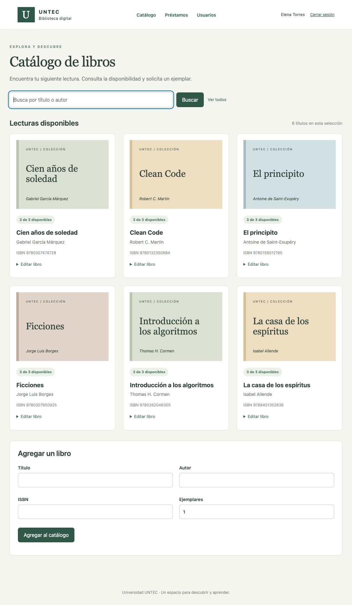
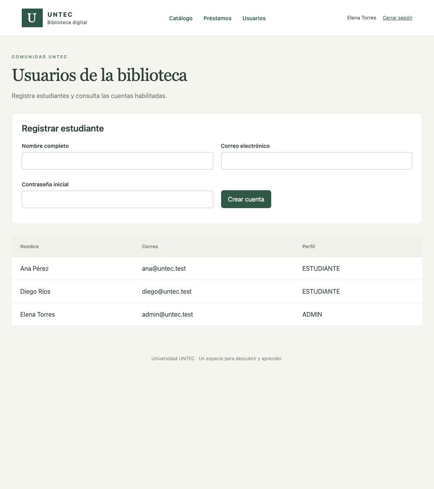
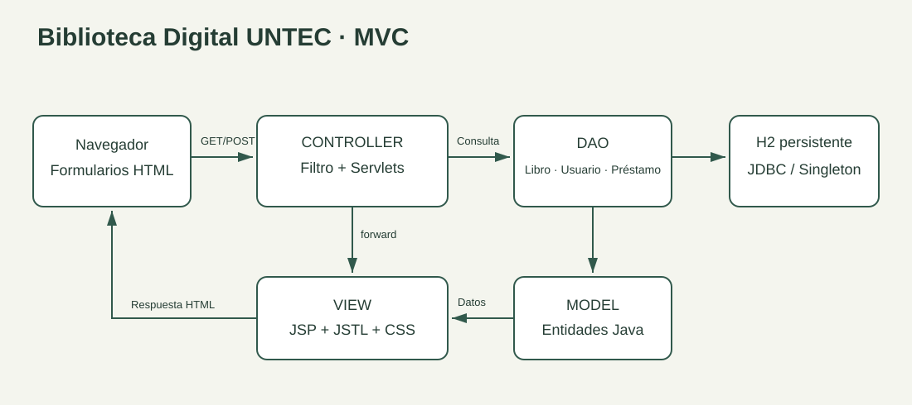

{kind=link}
{kind=link}
{kind=link}
{kind=link}
{kind=link}
Modelo y vista
Libro, Usuario y Prestamo representan los datos. Las JSP muestran la información con JSTL y mantienen las consultas SQL fuera de la presentación.
PORTAFOLIO · PROYECTO MÓDULO 5 ABP
Del catálogo manual a una aplicación web para consultar libros, solicitar préstamos y registrar devoluciones.

EL PROYECTO
La Biblioteca Digital UNTEC reúne libros, usuarios y préstamos en una aplicación Java EE. Los estudiantes pueden buscar títulos y gestionar sus lecturas; el personal administra el catálogo y las cuentas desde formularios web.
Estudiantes: consulta, solicitud de libros, historial personal y devolución.
Administración: alta y edición de libros, registro de estudiantes, préstamos, renovaciones y gestión del historial.
RECORRIDO VISUAL
Capturas reales de la aplicación en Tomcat. Selecciona una imagen para verla completa.

Acceso con credenciales y sesión de usuario.
Búsqueda por título o autor y consulta de ejemplares.

Solicitud registrada con fecha de vencimiento.

Registro de devolución y liberación del ejemplar.

Alta, edición y eliminación de libros.

Registro de estudiantes y consulta de cuentas.
DISEÑO DE LA SOLUCIÓN

Libro, Usuario y Prestamo representan los datos. Las JSP muestran la información con JSTL y mantienen las consultas SQL fuera de la presentación.
LoginServlet y LibroServlet, junto con los controladores de usuarios y préstamos, procesan GET y POST. HttpSession conserva la identidad durante la navegación.
Los DAO usan JDBC y consultas preparadas. Un Singleton centraliza la configuración; cada operación obtiene y cierra su conexión. Las transacciones evitan prestar más ejemplares de los disponibles.
VALIDACIÓN Y APRENDIZAJE
pruebas automatizadas aprobadas
0 fallos · 0 errores
Las pruebas cubren autenticación, registro, CRUD de libros y préstamos, permisos, integridad, rollback y solicitudes simultáneas del último ejemplar.
DOCUMENTACIÓN Y DESCARGAS
Esta página presenta el portafolio. La aplicación funcional se ejecuta con Java y Tomcat; las instrucciones de instalación están incluidas en la entrega.